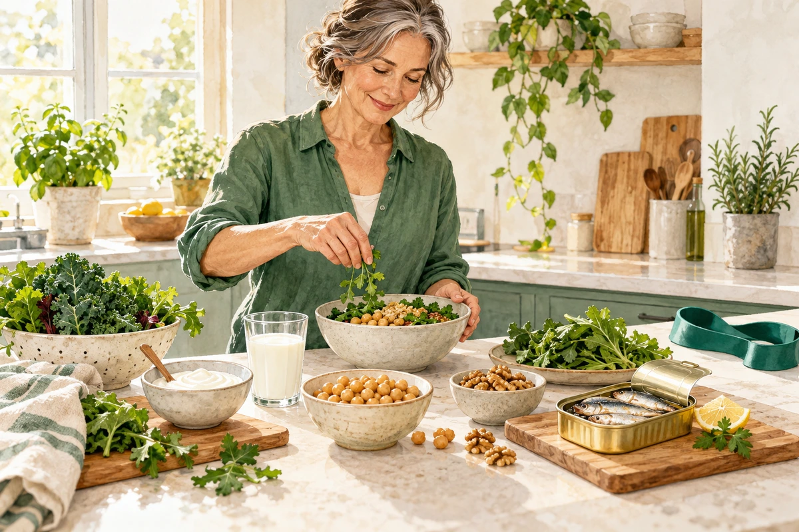
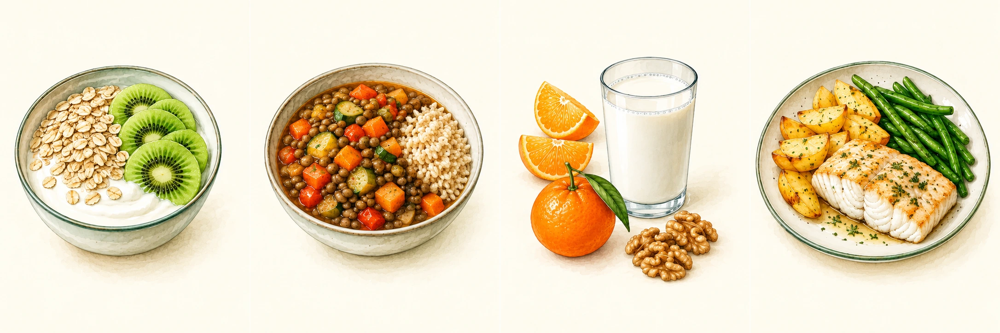

SITUACIONES ESPECIALES
Menopausia
Comer para cuidar huesos, músculo y bienestar.

Lo esencial
Es una etapa en la que cambian las hormonas y termina la menstruación. Habitualmente se reconoce tras 12 meses sin regla, si no hay otra causa. La transición anterior puede traer sofocos, sueño irregular y cambios de ánimo. Cada persona la vive de forma distinta.
La comida ayuda, pero no lo resuelve todo
No hay una dieta especial que “equilibre las hormonas” ni un alimento que cure los sofocos. Si los síntomas dificultan tu descanso o tu vida diaria, consulta las opciones de tratamiento. Comer menos de forma extrema puede hacerte perder músculo.
Alimentos que te ayudan
| Prioriza | Ejemplos sencillos |
|---|---|
| Proteína variada | Legumbres, pescado, huevos, tofu, carnes frescas y lácteos. |
| Alimentos con calcio | Leche o yogur; bebida de soja enriquecida; tofu con calcio; sardinas con espina comestible. |
| Verdura, fruta y cereales integrales | Verdura en comida y cena; fruta entera; avena, pan o arroz integrales. |
| Grasas saludables | Aceite de oliva y frutos secos sin sal. |
Con moderación
Bollería, bebidas azucaradas, embutidos, productos muy salados y exceso de mantequilla. Cuanto menos alcohol, mejor; puede empeorar el sueño. Si café o picante te provocan molestias, prueba a reducirlos y observa. No es necesario retirarlos a todo el mundo.
¿Qué se excluye?
Ningún alimento por la menopausia sola. No retires fruta, leche, gluten o legumbres sin un motivo concreto. Si no toleras lactosa, puedes usar lácteos sin lactosa. Si usas bebidas vegetales, mira si llevan calcio añadido: no todas lo aportan.
Un día que puedas mantener
| Momento | Una posibilidad |
|---|---|
| Desayuno | Yogur natural o soja enriquecida con avena y fruta. |
| Comida | Lentejas con verduras; fruta. |
| Cena | Pescado o tofu, verduras y patata o pan integral. |
| Si necesitas un tentempié | Fruta y un puñado pequeño de frutos secos; o yogur. |
Son ejemplos, no un menú con cantidades obligatorias. Ajusta el apetito y la pauta; no necesitas añadir un tentempié si no lo necesitas.
• Reparte alimentos con calcio a lo largo del día. Comprueba “calcio” en la etiqueta de la bebida vegetal y agítala antes de servir.
• Practica fuerza adaptada y actividades como caminar. Si tienes osteoporosis, fracturas o problemas de equilibrio, pide un programa seguro.
• Prepara cenas sencillas y procura un horario de descanso. Apunta si alcohol o cafeína empeoran tu sueño o tus sofocos.
• Compra opciones cómodas: legumbres cocidas, verduras congeladas y pescado en conserva. La alimentación saludable no exige recetas complicadas.
Menú semanal y fuentes
Cantidades según tu apetito y necesidades. Alternativas vegetales enriquecidas con calcio. Agua y aceite de oliva.

Las imágenes muestran ejemplos del lunes. Sigue los alimentos de la tabla para los otros días.